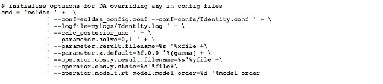
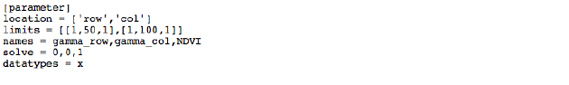

Spatial and multi-scale data assimilation examples¶
Introduction¶
Although only temporal data assimilation (DA) has been explored in depth in the prototype EO-LDAS tool, it was noted in Lewis et al. (2012a,b) that the tool should be capable of spatial, as well as temporal DA. The purpose of this technical note is to demonstrate the spatial capabilities of the tool and to show how multi-(spatial) resolution DA can be achieved.
To illustrate these concepts, we develop from the regularisation of NDVI data example in the EO-LDAS tutorial (www1). In this example, we demonstrate the concept of using regularisation (by a zero-order process model) to smooth and interpolate a noisy data sequence (that we suppose to be NDVI). The data in the experiment are synthetic, i.e. generated from a known truth. The experiment is run from a python code (www2) that generates the synthetic dataset, adds a significant amount of noise (standard deviation 0.15). Correlated gaps (mimicking clouds) are introduced into the data. In the example given 33% of the observations are removed. The results are shown in the figure below.

Fig 1: Smoothing a noisy time series with temporal DA.
The blue dots show the input data, with associated uncertainty (1.95 \(\sigma\), i.e. the 95% confidence interval (C.I)). The ‘truth’ a half sine wave with a flat section is shown as the green line. The retrieved state is shown as the red line (mean) and grey bounds (95% C.I.). This is a suitable example to demonstrate the principles of temporal data assimilation with two constraints: (i) the noisy observations; and (ii) a simple (zero-order process model). Although some problems are encountered at sudden changes (the transition between the sine wave and the flat time), the form of the underlying function is well reconstructed from the noisy samples. In this case, the observation operator, i.e. the operator that translates between the space of the state we are trying to estimate here (NDVI) and the observations (NDVI) is an identity operator. This is chosen to make a fast experiment and to demonstrate principles. There is no attempt to optimise the ‘smoothness’ (gamma) term in this and following experiments. Instead, we take a theoretical value from the truth and reduce it by a factor of 5 (so we should generally be under-smoothing).
The EO-LDAS tool is accessed in this example through (i) a configuration file; (ii) a command-line to override some of the settings in a generic configuration file. The command line is set as:
and the (generic) configuration file given in (www3. In the configuration file, we declare the ‘location’ specification to be ‘time’ and specify the parameters we wish to solve for (NDVI here).

and set up the differential operator (in time):

and the (Identity) observation operator:

In further examples in the tutorial and in Lewis et al. (2012a,b) we go on to show how more complex observation operators (such as a radiative transfer model) can be used in the DA so that vegetation state variables (LAI etc.) can be estimated from remote reflectance observations. The principle of the underlying (zero- or first-order) process models is the same as in the simple NDVI example.
The example is also interesting in its own right, as a demonstration of optimal filtering, i.e. smoothing with a target, multi-constraint cost function. It also shows how uncertainty can be calculated in such an optimal estimation framework.
Spatial data assimilation¶
Spatial data assimilation proceeds in exactly the same way as temporal DA when we use these simple process models. In fact, instead of considering the x-axis in figure 1 as time, we could simply state that it is a transect in space and all of the same results and conclusions would apply. In the spatial sense, we might consider this to be quite similar to what is done in optimal spatial interpolation schemes such as kriging or regression kriging (where some low order model is fitted and the difference constraint operates on the residuals of that model) (www4).
Python code for performing a spatial DA is given in www5. It is very much based on that for the temporal DA discussed above, but now we generate a synthetic dataset in two dimensions:

Fig. 2: Synthetic 2D (spatial) dataset
Figure 2 shows the spatial dataset generated in this code. It contains some 2-D sine waves and flat areas. The test data lies between the values 0 and 1 and represents NDVI, which one could imagine as representing say 4 ‘fields’ here, two with crops in and two bare soil. In such an imagining, we can see spatial variation in the NDVI (vegetation density) within the fields. Noise, of sigma 0.15 is added to these data, and again 33% of the samples removed. The input dataset then is shown in figure 3.
Fig. 3: Sampled synthetic 2D (spatial) dataset
We can again suppose the ‘holes’ in the observations to be representative of clouds. The configuration file for this experiment is given in www6 <https://github.com/jgomezdans/eoldas_examples/blob/master/config_files/IdentitySpatial.conf>. In setting up a spatial DA in EO-LDAS, we declare the location to be ‘row’ and ‘col’:
We then define two differential operators, one in row and the other in column space:

The observation operator is as in the previous example. The result of running the DA is an estimate of the NDVI for all sample locations:

Fig. 4: Result of DA (mean)
which is our posterior estimate of NDVI obtained from the samples given in figure 3. It is our ‘optimal estimate’ of the original data (figure 2) and does a very reasonable job of this. The uncertainty in this estimate is given by:
Fig. 5: Result of DA (sd)
Recall that the uncertainty in the input data was 0.15. Where we have sampled data, this has been reduced (by the DA/regularisation) to around 0.06, and in the gaps (i.e. under the clouds) the uncertainty is around 0.075. The fidelity of this reconstruction is perhaps better illustrated by taking a transect through the dataset:
Fig. 6: Transect through dataset at row 13
The input data are shown as green dots, and the reconstruction given as the red line, with cyan (95%) C.I.s. The original data (i.e. what we are trying to reconstruct) is the blue line. As with the temporal example in figure 1, this does a remarkably good job. A scatterplot of the true (x axis) and retrieved (y-axis with 95% CI as green errorbars) is shown in figure 7:

Fig. 7: Scatterplot of retrieved (y-axis) against true (x-axis) NDVI over all spatial samples
The scatterplot reveals a slight bias in the retrieved NDVI for high NDVI values, which is probably a result of the small number of high values in the input dataset and the type of smoothing used). It may just be a feature of the assumption of stationarity in the smoothness term. If you compare the high NDVI values in figures 2 and 4 you can see this same issue, although it is relatively minor in the grand scheme of things. Certainly the 95% C.I. covers the extent of the true data, so the C.I. is likely slightly over-estimated here.
Multi-resolution data assimilation¶
We can proceed from this example to consider multi-spatial resolution DA within EO-LDAS. Although we do not have any sensor spatial transfer functions within the prototype, we can demonstrate and explore the principles within the existing tool. This can be done by simply mapping a coarser spatial resolution dataset to the grid of a higher resolution dataset. To account for the fact that the sample observations will then be used multiple times within the existing DA, we can simply inflate the apparent uncertainty of each sample that we load.
Code to achieve this is given in www7. In this, we generate two datasets, one at ‘full’ resolution, with an uncertainty of 0.15 and with 33% of the observations missing, and one at a linear scale of 1/4 th, i.e. where 16 pixels at high resolution represent one pixel at coarse resolution. The filter window size used to correlate the data gaps is 3 in this example (larger filter sizes will result in larger gaps). The uncertainty in the coarse resolution data is 0.0375, so less than that at high resolution (by a factor of 4) but then we re-inflate it to an apparent uncertainty of 0.15 when applying the same (coarse) resolution sample pixel over the high-resolution grid.

Fig. 8: Results of multi-scale analysis for 1/3 data missing
Fig. 9: Transect through row 13 of results for 1/3 data missing
As in other examples in EO-LDAS, we use separate observation operators for the different data streams, though this is largely for convenience in this case as the both data sets are associated with Identity operators in this case. These results demonstrate the ability of the code to achieve a multi-resolution DA (albeit with a simple Identity observation operator here). With 1/3rd of the samples missing, the results are very good, although we note that the specifics of the ‘gap’ algorithm used here mean that gaps tend to be created at the edge of the image first (this is to do with how a random noise field is filtered to create the gappiness). There is no apparent bias in the results (figure 8f), and effective use is made of both the high- and low-resolution datasets to provide a viable (and in this case accurate) posterior estimate (figure 8b).
In a second example, www8, we consider the case where 2/3 of the data are missing, with a larger filter size (6) resulting in larger gaps. The results are clearly of somewhat lower quality, but this is reflected in the uncertainties. The uncertainty map (figure 10e) clearly demonstrates where the sampling in the input data (in both high and low resolution datasets) is poor (light blue). Unsurprisingly, where we have samples in both high and low spatial resolution datasets, the uncertainty is lowest. Given the amount of extrapolation in this exercise, the results are remarkably good. There is no apparent bias in the results (visually, from figure 10f). The transect in figure 11 shows that though the reconstruction is still perhaps a little noisy (it could most likely tolerate a higher gamma) it provides a faithful reconstruction of the original data from noisy multi-resolution datasets with large gaps.

Fig. 10: Results of multi-scale analysis for 2/3 data missing
Fig. 11: Transect through row 13 of results for 2/3 data missing
In a final example (www9), we remove 2/3rd of the samples from the high-resolution image, but only 1/3rd of the lower resolution data. This is an attempt to mimic the impact of higher frequency low spatial observations with occasional high-resolution data (though we do not directly consider the time dimension in this example). In this case, we have only sparse coverage at high resolution, but good coverage of most of the major features at low resolution. There is minimal ‘blockiness’ in the DA result in figure 12b, but even this does not seem very apparent in the transect (figure 13). The better coverage provided by the low resolution data produces much less scatter when comparing to the original signal (compare figures 10f and 12f). The result compares very favourably with that in figure 8 which had twice as many high resolution samples.
Fig. 12: Results of multi-scale analysis for 2/3 data missing in the high resolution and 1/3 missing in the low resolution.
Fig. 13: Transect through row 13 of results for 2/3 data missing in the high resolution and 1/3 missing in the low resolution.